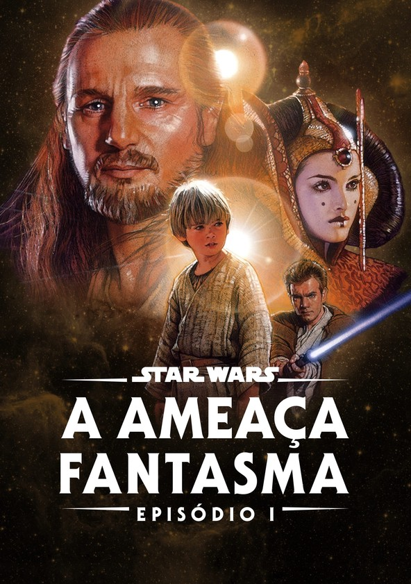

Há muito tempo atrás, numa galáxia distante...
Star Wars é uma franquia de filmes, séries, revistas em quadrinhos e desenhos animados. Uma trama política espacial com direito a
espadas brilhantes, naves espaciais, robôs, alienígenas, viagens na velocidade da luz e explosões, por algum motivo, sonoras. A trama
idealizada por George Lucas foi iniciada no fim da década de 1970 com o filme Star Wars: Uma Nova Esperança. O primeiro filme
acompanhava um jovem com uma ligação mistica com a galáxia (Luke Skywalker), um contrabandista espacial e seu fiel escudeiro
(Han Solo e Chewbacca), uma princesa de um planeta distante (Leia Organa) e dois robôs (C-3P0 e R2-D2), o quarteto viajava pela galáxia
lutando contra o temível império e as tropas de clones do terrível Darth Vader e do Imperador Palpatine. Com esse filme, chamado
posteriormente de Episódio IV, uma das maiores franquias da história do cinema começou. Portanto, Jovem padawan, caso queira conhecer
a história do início ao fim da era jedi, da ascensão à queda do temível império, da origem ao fim daquele que amedrontou a galáxia
por anos conhecido como Darth Vader, então acompanhe a história dos seis primeiros episódios da saga Star Wars e, como diziam os
velhos mestre jedi, que a força esteja com você!
O início da jornada
George Walton Lucas Junior foi o grande idealizador do universo de Star Wars, seja como produtor, roteirista ou diretor, ele
esteve presente durante todo o desenvolvimento dos seis primeiros filmes da saga. George Lucas fazia parte da nova geração de
diretores de cinema na década de 1970 e escreveu o roteiro de um filme que teria 6 horas de duração, após receber diversos "não"
de estúdios que não apoiavam a ideia, acabou dividindo essas seis horas em seis filmes (surgia aí os seis primeiros filmes da
saga). Após diveros problemas com o estúdio, equipe de produção, prazos e elenco a história de Star Wars finalmente começou em
1977, começando já com o quarto capítulo e segiu até 1983, durante esse período foi produzida a primeira trilogia que ficou
conhecida como "trilogia clássica". Em 1999 chegou aos cinemas o filme "Star Wars: A Ameaça fantasma" e esse filme deu início a
trilogia que se passaria antes dos três filmes originais e ficaria conhecida como "trilogia prequel". Esses seis primeiros filmes
modelaram todo o universo de star wars e são eles que contam a história princial dessa saga, das batalhas entre Jedis e Siths, da
ascensão à queda dos jedis e dos confrontos entre rebeldes e o império até a derrocada do lado sombrio da força.
O tempo em Star Wars é contado como ABY | DBY, ou seja, antes e depois da batalha de Yavin, batalha essa que foi o maior
confronto entre a Aliança Rebelde e o Império Galático na Guerra Civil Galática, foi nessa batalha que a primeira estrela da
morte foi destruida. O episódio IV conta a história dessa batalha e, devido a sua importância, a data dessa batalha é considerada
o ano 0, portanto os anos dos eventos em Star Wars são contado como antes, durante ou depois dessa batalha. Assim o universo de
Star Wars é dividido em 7 principais eras:
- era Pré-República
- era da Velha República
- era da Ascensão do Império
- era da Rebelião
- era da Nova República
- era da Nova Ordem Jedi
- era do Legado
A trilogia prequel se passa no final da era da Ascensão do Império e a trilogia clássica se passa no período da era da Rebelião.
Episódio I
A ameaça fantasma
A Federação de Comércio entra em conflito com a República Galática ao bloquear as rotas comerciais do planeta Naboo, o que gera conflitos entre o planeta e a Federação.
Secretamente, dois jedis são mandados para resolver o conflito que aparenta ser mais profundo. A mando do lorde sith Darth Sidius a Federação envia Darth Maul para assassinar o mestre jedi Qui-Gon e seu padawan Obi-Wan ao mesmo tempo que inicia uma invasão militar em Naboo.
Ver história

Episódio IV
Uma nova esperança
19 anos após os acontecimentos do episódio III a galáxia está sob poder do Império que é governado com mão de ferro pelo Imperador Palpatine e seu braço direito Lorde Darth Vader.
Os rebeldes liderados pela princesa Leia Organa conseguem roubar a planta de construção de uma arma bélica conhecida como Estrela da Morte e implantá-la no droide R2-D2 que segue para Tatooine buscando seu dono Obi-Wan Kenobi.
Após o assassinato brutal de seus tios, Luke Skywalker descobre o passado sobre os jedis e, junto de Obi-Wan, Leia e dois caçadores de recompensa (Han Solo e Chewbacca), tenta parar os planos maléficos do Império.
Ver história

"Um campo de energia criado por todas as coisas vivas. Ele nos envolve e penetra, é o que mantém a galáxia unida"
A força é a fonte de poder no universo de Star Wars, seja você um lorde sith, um mestre jedi, um caçador de recompensas,
android ou qualquer outro, qualquer ser tem ligação com a força, o que diferencia é a capacidade que o ser tem de se conectar
com ela. Nas células dos seres vivos existe um microorganismo microscópico chamado de Midi-Chlorians, esse microorganismo
facilita a interação com a força e contabilazando o tanto desses organismos existentes no seres é possível medir a sensibilidade
de cada ser à força, porém, há formas artificiais de se ligar a força e utilizar seu poder.
A força possui dois lados...
A forma com que um indivíduo se conecta e usa a força impacta diretamente em sua personalidade. A força se divide em dois lados:
- Ashla -> lado luminoso
- Bogan -> lado sombrio
O lado sombrio da força é, de forma geral, ultilizado pelos lordes Sith (Darth Vader, Darth Maul, Imperador Palpatine).
Os usuários desse lado costumam ser mais agressivos e letais em seus ataques, acessam a força pelo ódio e sentimentos negativos.
Em contra partida, o outro lado da força é acessado por meio de meditação e concentração extrema e pregam o afastamento emocional. Os mestres jedai (Yoda, Obi-Wan, Mace Windu) evitam usar a força para ferir e preferem ser letais apenas em último caso, buscam usar seus poderes jedi para buscar o equilíbrio e bem-estar da galáxia.
Por seguirem filosofias tão diferentes os mestre jedi e os lordes sith travam batalhas que se rastam por gerações, no fim, só
conseguem concordar em uma coisa: o perigo que o amor pode trazer. Para o lado negro o amor poder trazer compaixão e afeto, para
o lado jedi o amor pode trazer sentimentos como ciúme e raiva.
Porém, o que Star Wars mostra durante toda a saga é que ambos os lados existem dentro dos seres e o melhor caminho para uso da
força é na ralidade buscar o equilíbrio entre eles, assim o usuário pode combinar as habilidades dos dois lados se tornando um
usuário poderoso da força, como fez Luke Skaywalker.
Os sabres de luz são espadas de plasma feitas a partir de um cristal raro que é energizado com o poder do usuário do sabre,
assim o sabre recebe sua cor (verde, azul, roxo, vermelho), por isso os usuários do lado sombrio costumam possuir um sabre de luz
vermelho, pois energizam o cristal com sentimentos negativos, é por isso também que os sabres de luz costumam carregar a energia
do usuário original, energia essa que pode ser sentida por pessoas sensitivas a força, a exemplo do sabre de luz de Anakin
Skaywalker.
Há, porém, na galáxia sabres de luz artificiais e mesmo não sendo um usuário da força é possivel usar a espada luminosa.
Ela serve tanto para ataque quanto para defesa, há diversos formatos(uma, duas e até três pontas), podem bloquear tiros de
blasters, cortar praticamnete tudo e, claro, são extremamente letais. Até por esse motivo é mais comum ver apenas usuários
legítimos da força os ultilizando, o que fez com que a arma se tornasse quase que a identificação de um usuário da força.
Que a força esteja com você!